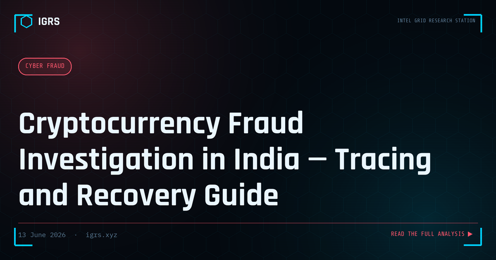

Cryptocurrency Fraud Investigation in India — Tracing and Recovery Guide
Why Cryptocurrency Fraud Is Exploding in India
Cryptocurrency fraud has become one of the fastest-growing cybercrime categories in India. From fake investment platforms promising guaranteed returns to elaborate pig-butchering romance scams ending in crypto transfers, fraudsters exploit the perceived complexity and irreversibility of digital assets. Yet contrary to popular belief, cryptocurrency transactions are among the most traceable forms of value transfer ever created. Every transaction is permanently recorded on a public, immutable ledger. This guide explains how cryptocurrency fraud is investigated in India, from blockchain tracing to exchange cooperation and legal recovery.
Common Cryptocurrency Fraud Types in India
| Fraud Type | How It Operates |
|---|---|
| Fake investment platforms | Victims shown fabricated profits, then locked out when withdrawing |
| Pig butchering | Long-term relationship building before a fake crypto investment pitch |
| Rug pulls / fake tokens | New tokens promoted aggressively, then abandoned after collecting funds |
| Mining and staking scams | Pay to join fake mining pools that never pay out |
| Recovery scams | Fraudsters posing as recovery agents target previous victims |
| P2P merchant fraud | Fake payment proof in peer-to-peer crypto trades |
The majority of crypto fraud in India involves USDT on the Tron network (TRC-20), prized by fraudsters for low fees and fast settlement. Understanding which chain is involved determines the investigation approach.
Blockchain Analysis: Following the Money On-Chain
The foundation of crypto fraud investigation is blockchain analysis. Because every transaction is public, an investigator can trace the flow of funds from the victim's wallet through intermediary addresses to a final cash-out point. Free blockchain explorers make this possible:
| Explorer | Chain | Use |
|---|---|---|
| blockchain.com | Bitcoin | BTC transaction tracing |
| etherscan.io | Ethereum | ETH and ERC-20 tokens |
| tronscan.org | Tron | USDT-TRC20 (most India fraud) |
| bscscan.com | BNB Chain | BEP-20 tokens |
The investigative path is: victim wallet → fraudster's receiving wallet → intermediary/mixing addresses → exchange deposit address. The exchange deposit address is the critical pivot, because it connects the pseudonymous blockchain to a real identity through the exchange's KYC records.
Address Clustering and Wallet Attribution
Sophisticated investigations use address clustering — grouping multiple wallet addresses controlled by the same entity based on transaction patterns. When several addresses consistently move funds together or share common inputs, they likely belong to one operator. This technique reveals the true scale of a fraud operation, exposing dozens of addresses behind what appeared to be a single scam. Commercial tools like Chainalysis, Elliptic, and TRM Labs automate this clustering and provide risk scoring, while free explorers allow manual tracing for smaller cases.
Exchange Identification and KYC Requests
Most stolen crypto eventually reaches a centralized exchange to be converted into fiat currency. This is where attribution becomes possible. Indian exchanges registered with the Financial Intelligence Unit (FIU-IND) are required to maintain KYC records and respond to lawful requests:
- Indian exchanges (WazirX, CoinDCX, Zebpay) — serve a Section 94 BNSS notice with the deposit address and transaction details
- International exchanges (Binance, Coinbase, Kraken) — require MLAT or international legal process, which is slower
- FIU-IND — report suspicious crypto transactions; the unit can assist in tracing across registered entities
The KYC data from the exchange — name, Aadhaar/PAN, bank account, IP logs — transforms an anonymous blockchain trail into an identified suspect.
Legal Framework for Crypto Fraud in India
| Section | Act | Offence |
|---|---|---|
| Section 318 | BNS 2023 | Cheating |
| Sections 3 & 4 | PMLA 2002 | Money laundering |
| Section 66D | IT Act 2000 | Personation using computer |
| Section 66C | IT Act 2000 | Identity theft |
Cryptocurrency in India is taxed at a flat 30% on gains, and exchanges must register with FIU-IND under anti-money-laundering rules. The Enforcement Directorate handles larger crypto laundering cases under the PMLA, with powers to attach proceeds of crime including crypto assets.
Investigating Pig Butchering Crypto Scams
Pig butchering deserves special focus because it is now among the highest-value crypto frauds in India. The operation builds emotional trust over weeks through dating apps or wrong-number messages, then introduces a fraudulent crypto investment showing fake profits. Investigation combines OSINT on the fraudster's persona (often using stolen photos), blockchain tracing of the investment transfers, and identification of the fake platform's infrastructure. These operations are frequently run by organized syndicates, sometimes operating from scam compounds abroad, making international cooperation essential.
Recovery and Asset Tracing
Recovery of crypto assets is challenging but not impossible. When funds are traced to an identified exchange account before cash-out, a freeze request through legal process can preserve them. The PMLA provides for attachment of crypto proceeds. Victims should report immediately to cybercrime.gov.in and 1930, report to FIU-IND, and provide all transaction hashes and wallet addresses. The faster the blockchain trail is established and the exchange notified, the higher the chance of freezing assets before they are withdrawn or mixed beyond recovery.
Building a Crypto Fraud Case for Court
Blockchain evidence must be properly preserved for admissibility. Investigators should capture transaction hashes, wallet addresses, blockchain explorer screenshots, and the complete fund-flow analysis, all accompanied by a Section 63 BSA 2023 certificate. The immutable nature of blockchain is an evidentiary advantage — the ledger itself cannot be altered, and transaction records are independently verifiable by anyone. A well-documented on-chain analysis, combined with exchange KYC and the money-laundering framework, builds a case that is both technically robust and legally sound.